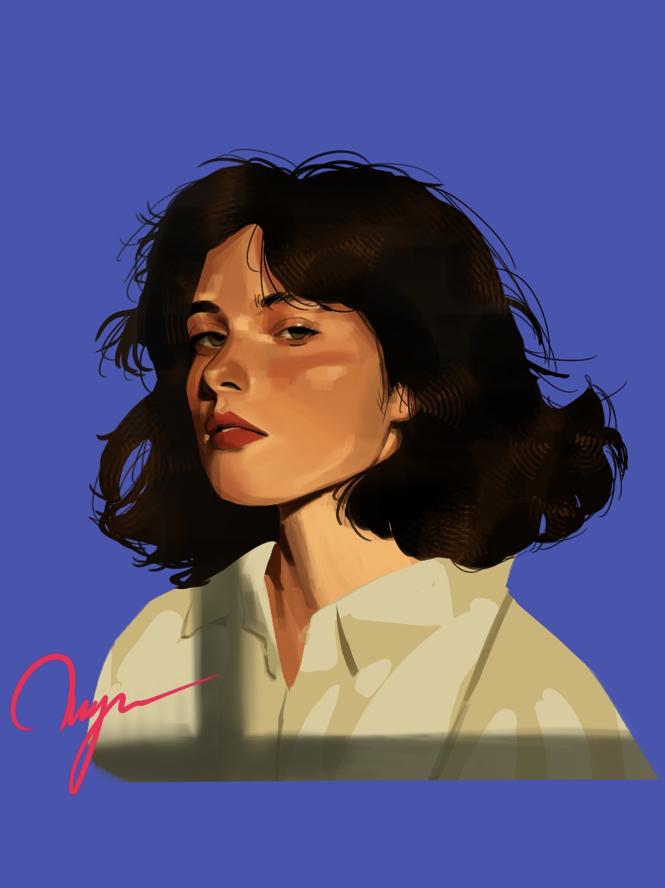

Hi
I'm Jiayu Zhao
Thanks for watching my website!
About myself:
My name is Jiayu Zhao, I was born in Budapest, the capital of Hungary. I am proficient in three languages：Hungarian, Chinese and English.
I am passionate about film culture. I have watched a large number of films, and when discussing cinema, I always find myself talkative. Behind-the-scenes aspects of filmmaking never fail to spark my interest and curiosity, and I am eager to work in the film industry. I am confident in my abilities, and therefore I am full capable of excelling in any role or position within my field that your company might offer me. I am prepared to give my all to the work I love.
Project experiences:
I have completed my first 60-second animation project(a team of 3,including myself) as a director and producer. Primarily using Maya2024, Zbrush to create 3D models, Arnold to render, compositing and lightning, ADV to rig the characters, and then use Premiere Pro to edit the video.
Me and some of my arts


Here are the links to check out more
-My instagram profile!-Check out my first animation !
2026 Jiayu. All rights reserved.
click to go back to the top